器材库 > APS及其以下画幅可换镜头数码相机 > D500

规格总览
产品类型
APS画幅可换镜头数码相机
发布日期
2016-01-06
厂家推荐价格
259,000.00 （日元）
影像规格
影像传感器
CMOS
影像传感器尺寸
约23.5×15.7mm
总像素
约2151万
有效像素
约2088万
影像处理器
EXPEED 5
静态图像格式
JPEG, TIFF-RGB, NEF(RAW), NEF(RAW)+JPEG
静态图像尺寸
L: 5568×3712, M: 4176×2784, S: 2784×1856
短片格式
MOV
短片尺寸
3840 x 2160（4K UHD）；30p（逐行），25p，24p1920 x 1080；60p，50p，30p，25p，24p1280 x 720；60p，50p
镜头和对焦
镜头卡口
Nikon F
兼容镜头
兼容AF尼克尔镜头，包括G型、E型和D型镜头（PC镜头受到某些限制）、DX 镜头、AI-P 尼克尔镜头以及非CPU AI 镜头（仅限于A 和M 模式）。不能使用IX 尼克尔镜头、用于F3AF 的镜头以及非AI 镜头。
对焦点
153 个对焦点，其中55 或15 个对焦点可供选择
AF辅助灯/光
有
手动对焦
支持
曝光控制
测光系统
使用约180K （180000）像素RGB 感应器的TTL曝光测光
测光模式
中央重点测光, 点测光, 矩阵测光, 亮部重点测光
测光范围
-3EV~20EV
曝光模式
带有柔性程序的程序自动（P） 、快门优先自动（S）、光圈优先自动（A）和手动（M）
拍摄模式
S (单张拍摄), CL (低速连拍), CH (高速连拍), Q (安静快门释放), 自拍, MUP (反光板弹起)
快门类型
电子控制纵走式焦平面机械快门；电子前帘快门（适用于反光板弹起释放模式）
快门速度
1/8000-30 秒（以1/3、1/2 或1EV 为步长进行微调）、B 门、遥控B门、X250
闪光同步速度
1/250
曝光补偿
±5EV以1/3、1/2或1EV级调整
ISO感光度
以1/3、1/2 或1EV 为步长在ISO 100-51200 之间进行微调。可在ISO 100的基础上约减少0.3、0.5、0.7 或1EV（相当于ISO 50），或者在ISO 51200的基础上约增加0.3、0.5、0.7、1、2、3、4 或5EV（相当于ISO 1640000）；自动ISO 感光度控制可用
白平衡
自动（3 种类型）、白炽灯、荧光灯（7 种类型）、晴天、闪光灯、阴天、背阴、手动预设（最多可保存6 个值，点白平衡测量在即时取景过程中可用）、选择色温（2500K-10000K），全部都可进行微调
连拍
约10幅/秒, CL：1-9幅/秒; CH：约10幅/秒; 约3幅/秒（安静连拍模式）
取景器/显示屏
取景器
眼平五棱取景器
取景范围
100%
取景放大倍率
约1倍
屈光度调节范围
2至+1m-1
对焦屏
B 型光亮磨砂对焦屏Mark II，带有AF 区域框（可显示取景网格）
反光镜
即时返回型
景深预视
有
LCD类型
彩色TFT LCD
LCD尺寸
3.2英寸
LCD像素
约235.9万
视野率
约100%
LCD特性
触摸屏, 翻转屏
Live View
有
文件输入/输出
存储卡
SD/SDHC, SDXC, XQD
数据接口
USB3.0
视频/音频接口
C型HDMI接口
电源
电池
一块EN-EL15 锂离子电池组
机身规格
颜色
黑色
尺寸
约147×115×81mm
重量
（仅机身）760g / （带电池和XQD存储卡）约860g
其它
配件端口
脚架螺丝孔
工作温度
0~40℃
工作湿度
不高于85%
附件
显示屏盖 BF-1B、锂离子电池组 EN- EL15（带端子盖）、电池充电器 MH-25a（带电源适配器或电源线，形状根据销售的国家不同而异）、USB线夹、HDMI线夹、USB线UC-E22、背带AN-DC17
zhnikon2017-12-20 15:594.81 分
操作性 5.00功能性 5.00美观性 5.00趣味性 4.50耐用性 5.00性价比 4.50解像力 4.50色彩还原 5.00
唯长城2017-08-21 16:144.63 分
操作性 4.50功能性 5.00美观性 5.00趣味性 4.50耐用性 5.00性价比 4.00解像力 4.50色彩还原 4.50
徽州山人2017-06-22 09:334.81 分
操作性 5.00功能性 5.00美观性 5.00趣味性 5.00耐用性 4.50性价比 4.50解像力 4.50色彩还原 5.00
wb69712017-03-30 11:044.94 分
操作性 5.00功能性 5.00美观性 5.00趣味性 5.00耐用性 5.00性价比 4.50解像力 5.00色彩还原 5.00
康花花2016-06-26 23:554.56 分
操作性 5.00功能性 5.00美观性 4.50趣味性 4.00耐用性 5.00性价比 4.00解像力 4.50色彩还原 4.50
产品图 / 样片
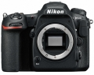
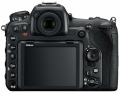
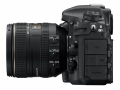
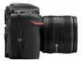
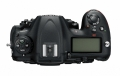
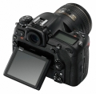
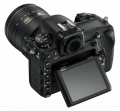
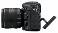
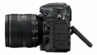
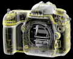
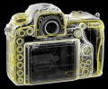
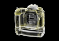
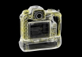
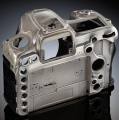
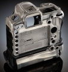
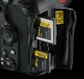
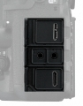
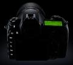
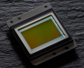
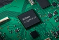
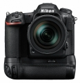
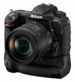
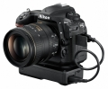
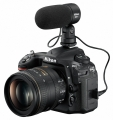
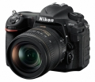
评测 / 相关文章
- 详细内容 （存档）
- APS-C新霸主 尼康D500详细评测 （存档）
- ［行情］非全幅机皇 尼康D500最新低价 （存档）
- ［资讯］尼康三款产品获德国“2017 iF产品设计大奖” （存档）
- ［资讯］DP公布2016年度相机获奖结果 （存档）
- ［资讯］Imaging Resource辣评相机中的入门神器 （存档）
- ［资讯］DXO告诉你玩尼康D500如何配定焦 （存档）
- ［资讯］JPG直出哪家强 八家相机画质大比拼 （存档）
- ［资讯］适者生存 DxO公布尼康D500最牛变焦镜头 （存档）
- ［资讯］重要更新 尼康发布D500最新固件V1.11 （存档）
- ［资讯］EISA公布2016-2017年度器材奖项 （存档）
- ［行情］尼康D500单机身行货低价 （存档）
相关文章
- ［行情］非全幅机皇 尼康D500最新低价 （存档）
- ［资讯］尼康三款产品获德国“2017 iF产品设计大奖” （存档）
- ［资讯］DP公布2016年度相机获奖结果 （存档）
- ［资讯］Imaging Resource辣评相机中的入门神器 （存档）
- ［资讯］DXO告诉你玩尼康D500如何配定焦 （存档）
- ［资讯］JPG直出哪家强 八家相机画质大比拼 （存档）
- ［资讯］适者生存 DxO公布尼康D500最牛变焦镜头 （存档）
- ［资讯］重要更新 尼康发布D500最新固件V1.11 （存档）
- ［资讯］EISA公布2016-2017年度器材奖项 （存档）
- ［行情］尼康D500单机身行货低价 （存档）
- ［资讯］尼康多款数码单反固件更新 （存档）
- ［资讯］尼康D500电池电量检测问题 （原站已下线）
- ［行情］尼康D500机身最新低价 （原站已下线）
- ［资讯］一睹芳容 尼康100周年限量版D500开箱 （原站已下线）
- ［资讯］性能进化 尼康发布D5/D500新固件 （原站已下线）
- ［资讯］尼康就是结实 D500被狗攻击依然可以工作 （原站已下线）
- ［资讯］尼康D500获日本相机大奖的编辑奖 （原站已下线）